Guía de Usuario de SecInterp
1. Introduction
¡Bienvenido al plugin SecInterp! Esta guía te ayudará a crear secciones geológicas transversales a partir de tus capas de QGIS y un Modelo Digital de Elevación (DEM). SecInterp es compatible con QGIS 3.28+ y QGIS 4.x.
SecInterp te permite:
Crear un perfil topográfico a partir de un Modelo Digital de Elevación (DEM).
Proyectar unidades geológicas desde una capa de polígonos sobre el perfil.
Proyectar medidas estructurales (ej: buzamiento y dirección) sobre el perfil.
Proyectar trazas de sondajes e intervalos geológicos sobre la sección.
Selector de elemento de sección: elige una línea concreta de una capa con varias features. Solo se listan líneas de una sola parte con exactamente dos vértices (inicio y fin), como
fid — label; las líneas con 3 o más vértices se excluyen. EligeAutoo cualquier campo de atributo para etiquetar las entradas.Herramienta de Interpretación: Digitaliza interpretaciones geológicas directamente en la sección con snapping inteligente.
Exportación 3D (PolygonZ): Exporta tus interpretaciones 2D como Shapefiles 3D válidos.
Soporte i18n: Interfaz disponible en inglés y 13 traducciones (español, alemán, francés, italiano, portugués (Brasil), ruso, chino (simplificado), hindi, japonés, indonesio, neerlandés, polaco y finés).
Visualizar una previsualización interactiva con optimización de nivel de detalle (LOD).
Medir distancias y gradientes con snapping automático a vértices.
2. The Main Window
El diálogo de SecInterp se divide en tres áreas principales:
Navegación Lateral (Izquierda): Navega entre diferentes módulos: DEM, Sondajes, Geología, Estructural, Ajustes y Ayuda.
Página de Configuración (Centro): Donde configuras los parámetros para el módulo seleccionado.
Panel de Previsualización (Derecha): Un lienzo interactivo que muestra tu sección transversal en tiempo real.
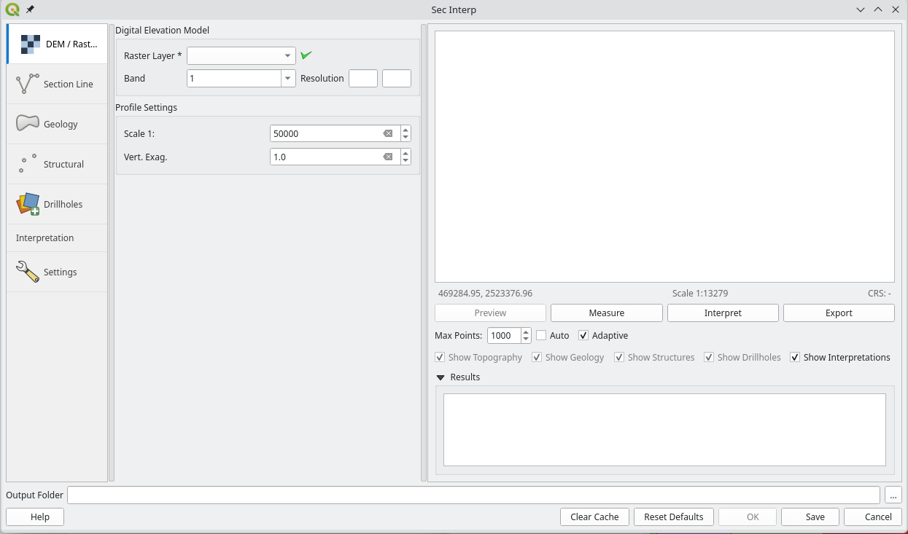
La Ventana Principal consolidada v2.9.0 con navegación lateral.3. Step-by-Step Tutorial: Creating a Profile
Paso 1: Modelo Digital de Elevación (DEM)
Navega a la página DEM en la barra lateral.
Capa Ráster: Selecciona tu Modelo Digital de Elevación (Obligatorio).
Banda: Selecciona la banda que contiene los valores de elevación (Obligatorio).
Resolución: Calculada automáticamente basada en la resolución del DEM.
Escala 1:1: Calculada automáticamente basada en la resolución del DEM.
Exag. Vert.: Ajusta si quieres enfatizar la topografía (ej: 2.0x).
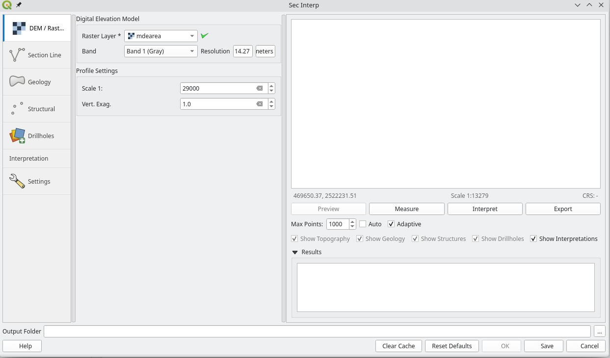
Configuración del Modelo Digital de Elevación.Paso 2: Definir Línea de Sección
Navega a la página Línea de Sección.
Capa de Sección: Selecciona la capa vectorial de líneas que representa tus trazas de sección (Obligatorio).
Elemento: Elige la línea de sección en el combo
fid — label. Solo se listan líneas de una sola parte con exactamente dos vértices; las de 3 o más se excluyen.Campo de etiqueta: Elige
Autoo un campo de atributo para etiquetar las entradas. Solo cambia el texto del combo, no la sección muestreada.Dist. de Buffer (m): Establece una distancia de buffer (ej: 50m) para capturar datos alrededor de la línea (Obligatorio).
Importante: La línea seleccionada debe ser de una sola parte y tener exactamente dos vértices (inicio y fin) para el perfil y la exportación 3D.
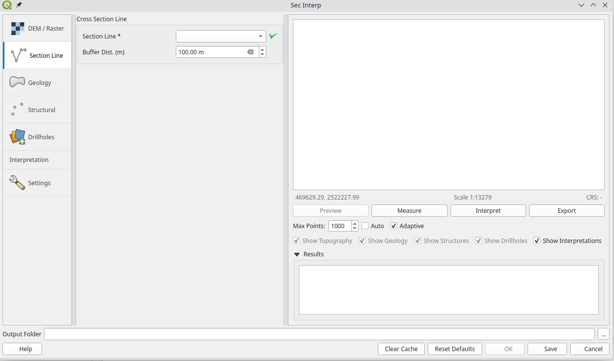
Selección de Línea de Sección y configuración de buffer.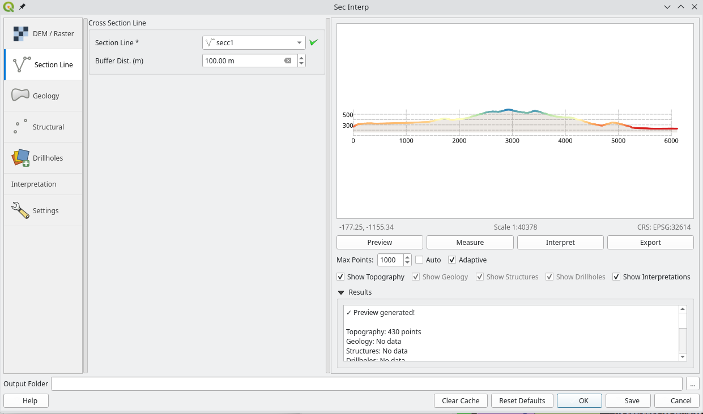
Vista previa de la sección DEM del perfil.Paso 3: Añadir Datos Geológicos
Navega a la página Geología.
Capa de Afloramientos: Selecciona la capa de polígonos que contiene tu geología de superficie (opcional).
Campo de Nombre: Elige el campo que contiene los códigos o nombres de las unidades (Obligatorio si se selecciona una Capa de Afloramientos).
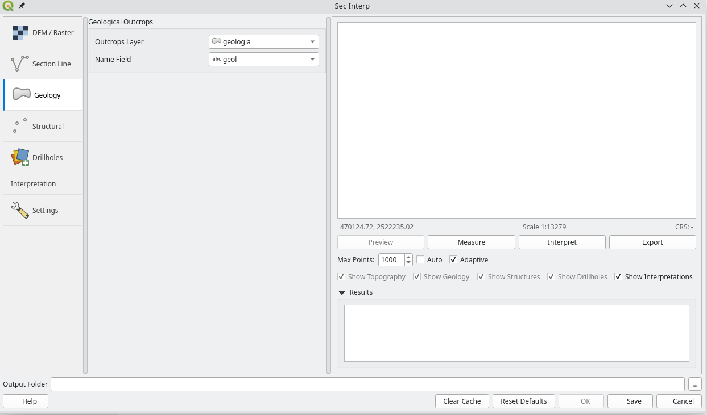
Configuración de Geología.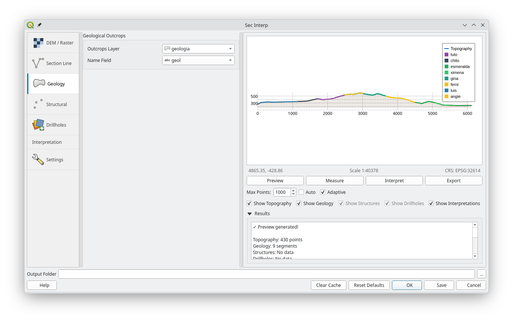
Previsualización de Sección Geológica.Paso 4: Añadir Datos Estructurales
Navega a la página Estructural.
Capa Estructural: Selecciona la capa que contiene tus medidas de buzamiento (opcional).
Campo de Buzamiento: Elige el campo que contiene los valores de buzamiento (Obligatorio si se selecciona una Capa Estructural).
Campo de Dirección: Elige el campo que contiene los valores de dirección/strike (Obligatorio si se selecciona una Capa Estructural).
Escala de Línea de Buzamiento: Ajusta la escala de las líneas de buzamiento (ej: 1.0).
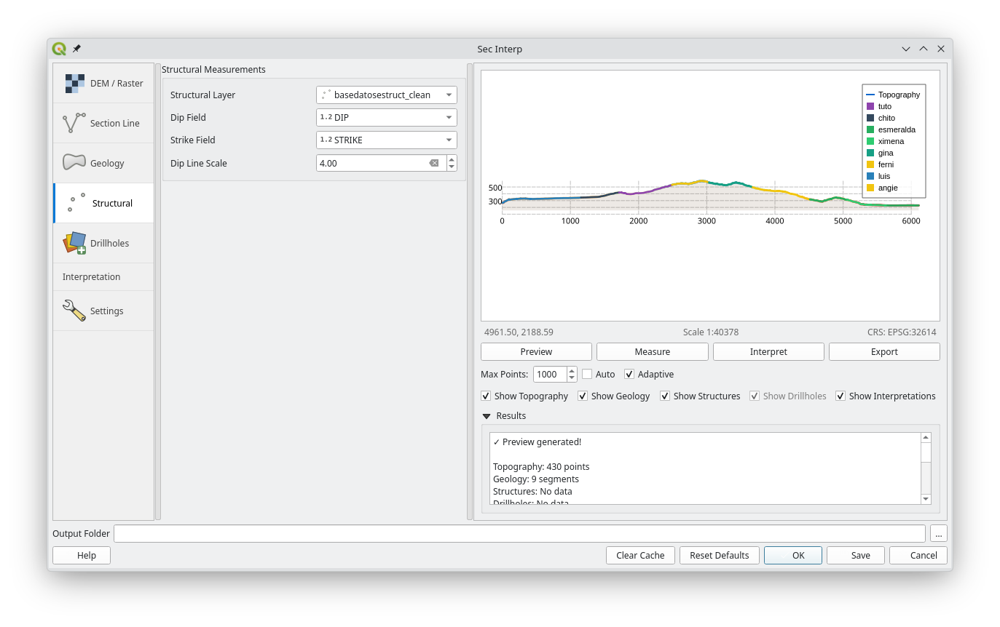
Configuración estructural.Vista previa de la sección estructural.
Paso 5: Añadir Datos de Sondajes
La página de Sondajes te permite proyectar datos de pozos sobre la sección (opcional). Esta página se divide en tres pestañas:
1. Collars Tab
Configura la ubicación de los collares de los sondajes (puntos de inicio).
Capa de Collares: Capa de puntos con las ubicaciones de los pozos (opcional).
Usar Geometría de Capa para Coordenadas: Mantener marcado para usar la geometría de la capa de puntos para las coordenadas X/Y (Opcional si se selecciona una Capa de Collares).
ID de Pozo: Identificador único para cada sondaje (Obligatorio si se selecciona una Capa de Collares).
Este (X): Campo opcional para la coordenada X del collar (si no se usa la geometría de la capa de puntos).
Norte (Y): Campo opcional para la coordenada Y del collar (si no se usa la geometría de la capa de puntos).
Elevación (Z): Campo opcional para la elevación del collar (si no se usa el DEM).
Profundidad total: Campo opcional para la profundidad máxima.
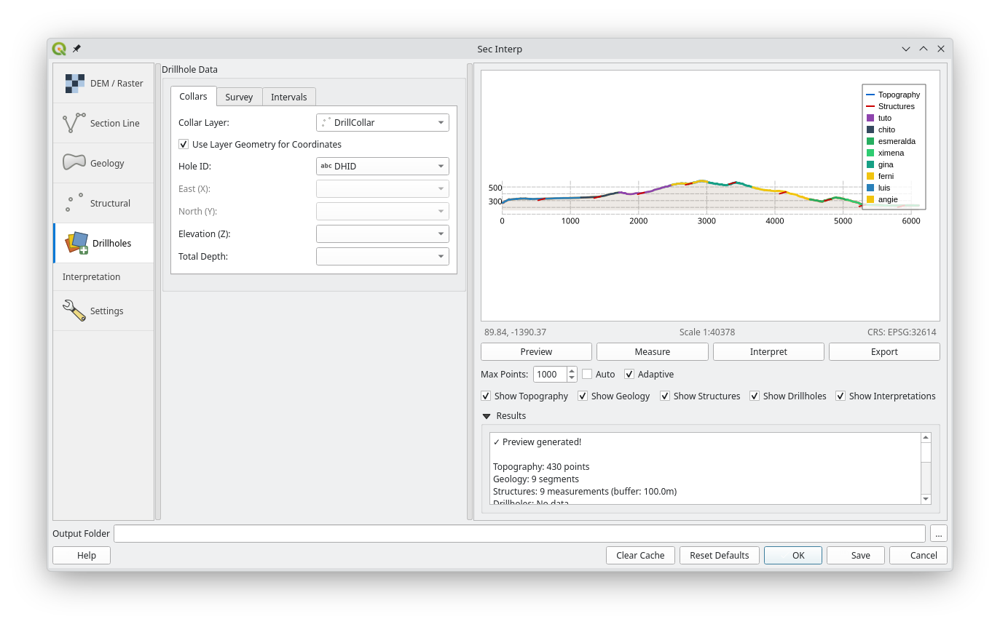
Configuración de collares de sondajes.2. Survey Tab
Configura los datos de trayectoria/desviación del pozo.
Capa de survey: Tabla o capa con medidas de survey (obligatoria si se selecciona la capa de collares).
ID de sondeo: Campo que enlaza con el ID del collar (obligatorio si se selecciona la capa de survey).
Profundidad: Distancia a lo largo del sondeo (obligatorio si se selecciona la capa de survey).
Azimut: Dirección (0-360) (obligatorio si se selecciona la capa de survey).
Inclinación: Buzamiento (-90 a 90) (obligatorio si se selecciona la capa de survey).
Configuración de survey de sondajes.
3. Intervals Tab
Configura los intervalos geológicos o de atributos.
Capa de intervalos: Tabla o capa con datos de logging (opcional).
ID de sondeo: Campo que enlaza con el ID del collar (obligatorio si se selecciona la capa de intervalos).
Desde / Hasta: Rangos de profundidad de cada intervalo (obligatorio si se selecciona la capa de intervalos).
Litología: Campo con el tipo de roca o atributo a visualizar (obligatorio si se selecciona la capa de intervalos).
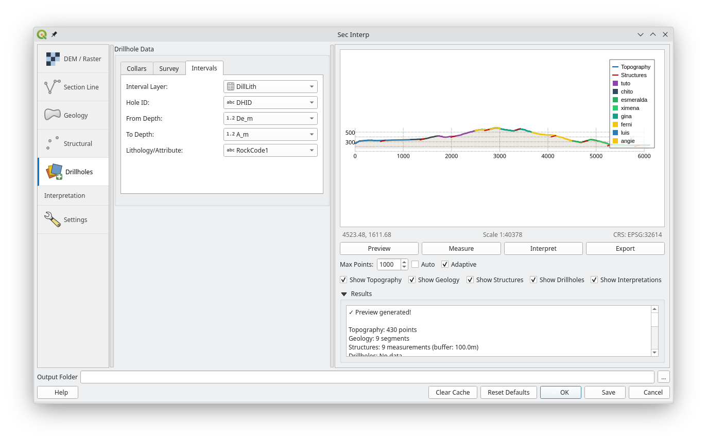
Configuración de intervalos de sondajes.Paso 6: Generar Previsualización
Haz clic en el botón Preview (abajo a la derecha).
La sección se renderizará en el panel de la derecha. Usa la rueda del ratón para hacer zoom y arrastra para desplazarte.
Usa las Casillas de Verificación de Mostrar para alternar la visibilidad de la topografía, geología, estructuras, sondajes y polígonos de interpretación.
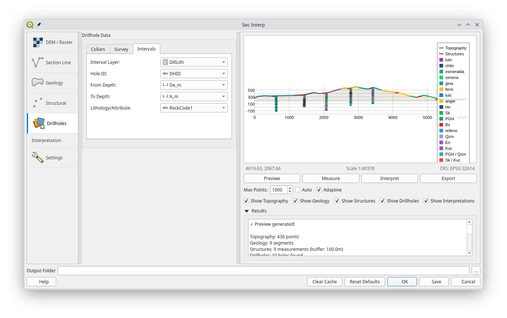
Vista previa de la sección con todas las capas activadas.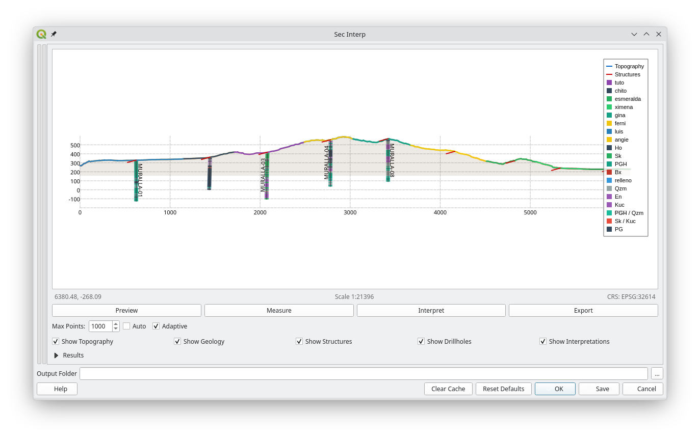
Vista previa de la sección con todos los paneles contraídos.4. Advanced Features
4.1 Herramienta de Interpretación (Dibujo)
La nueva Herramienta de Interpretación te permite dibujar polígonos geológicos directamente sobre la sección del perfil.
Habilita la herramienta haciendo clic en el botón Interpretar en la barra de herramientas de previsualización.
Dibujo: Clic izquierdo para añadir vértices.
Snapping: El cursor se ajustará automáticamente a:
Superficie topográfica.
Contactos de sondajes.
Vértices de interpretación existentes.
Deshacer: Clic derecho para eliminar el último vértice.
Finalizar: Doble clic (o Enter) para cerrar el polígono.
Propiedades: Aparecerá un diálogo para definir la Litología, Formación y Color del nuevo polígono.
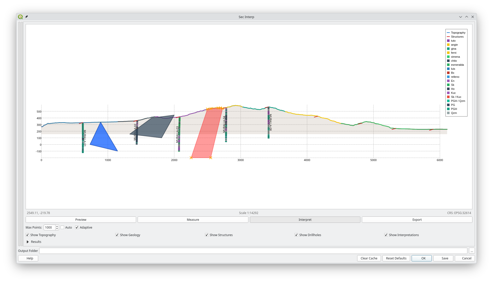
Digitalizando una nueva unidad geológica con la herramienta de interpretación.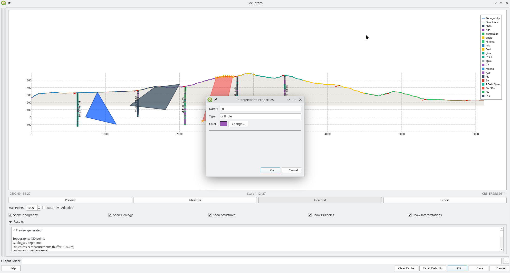
Digitalizando una nueva unidad geológica con la herramienta de interpretación.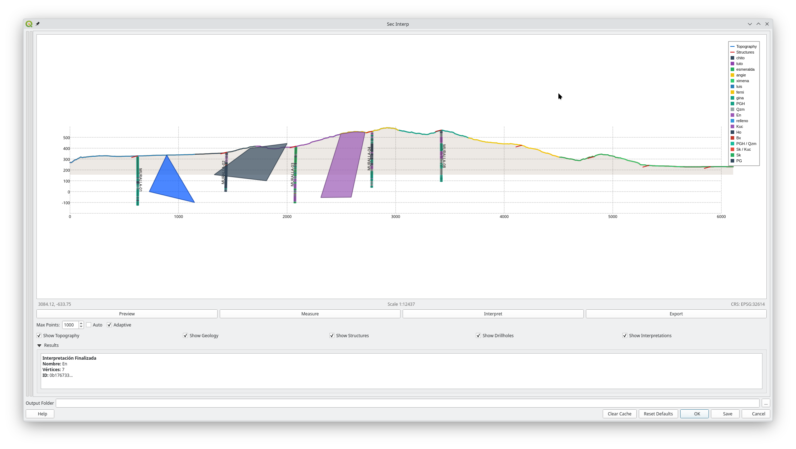
Digitalizando una nueva unidad geológica con la herramienta de interpretación.4.2 Herencia de atributos
Al digitalizar un nuevo polígono de interpretación, SecInterp intenta heredar automáticamente atributos de los datos subyacentes:
Solape con geología: Si el nuevo polígono se solapa con un afloramiento geológico proyectado, se rellenarán previamente el nombre y las unidades.
Proximidad a sondajes: Si el polígono empieza o termina cerca de un intervalo de sondaje, heredará la litología/unidad de roca de ese intervalo (p. ej., «Andesita», «Toba»).
Anulación manual: Siempre puedes cambiar manualmente el color o el nombre heredados en el diálogo de propiedades.
4.3 Exportación a 3D (PolygonZ)
SecInterp ahora cierra la brecha entre las secciones 2D y el modelado 3D. Esta función te permite exportar tus interpretaciones 2D como objetos 3D reales.
Flujo de trabajo:
Ve a la pestaña Advanced dentro de Settings y marca «Enable 3D Interpretation Export» (activado por defecto desde la v3.8.0).
Usa el botón Save (no Export) para generar tus datos.
El plugin creará un Shapefile PolygonZ en tu carpeta de salida.
Cada vértice de tu interpretación se proyecta a coordenadas 3D reales según el plano de sección y la elevación de la superficie.
Nota: Esta función ya es estándar y está disponible para todos los usuarios.
4.4 Página de configuración
La página Settings gestiona la configuración de exportación y las funciones avanzadas. Está organizada en tres subpestañas:
1. Default Tab (Export Selection)
Controla exactamente qué se genera al hacer clic en Save.
Perfil topográfico: Exporta la línea de superficie (CSV/SHP).
Perfil geológico: Exporta los contactos proyectados (CSV/SHP).
Datos estructurales: Exporta las medidas estructurales proyectadas (CSV/SHP).
Datos de sondajes: Exporta trazas (
LineStringZ) e intervalos (PolygonZ) como Shapefiles 3D.Interpretaciones (2D): Exporta los polígonos dibujados (SHP).
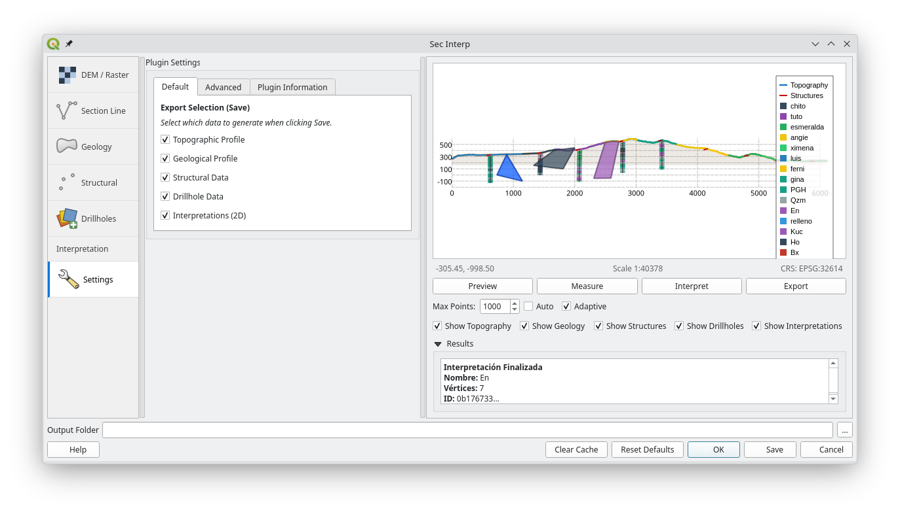
Configuración por defecto mostrando la selección de exportación.2. Advanced Tab
Enable 3D Interpretation Export: Activa la generación de Shapefiles PolygonZ para tus interpretaciones. Crea geometrías 3D reales según el plano de sección.
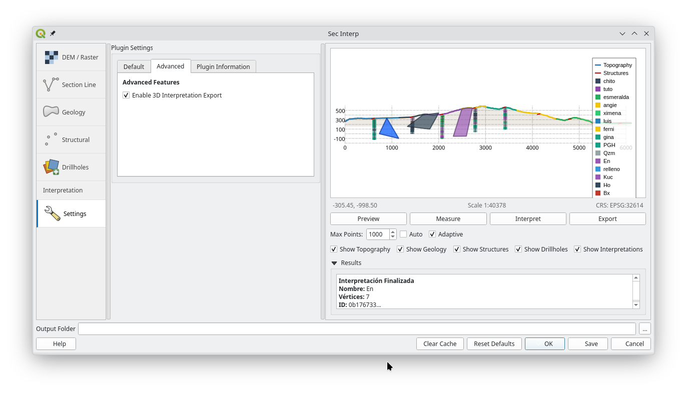
Configuración avanzada con la función de exportación 3D.3. Plugin Information Tab
Muestra la versión, los créditos y los datos de contacto de SecInterp.
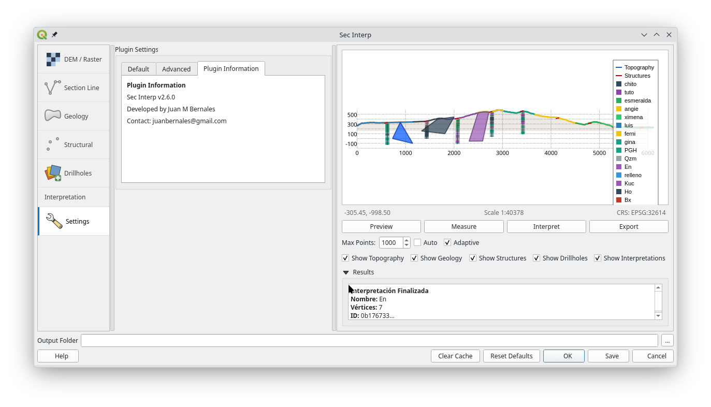
Información del plugin.5. Preview Panel & Tools
El panel derecho actúa como lienzo interactivo de tu sección. Incluye una barra de herramientas y controles específicos para gestionar la visualización y el rendimiento.
5.2 Controles de visualización (LOD)
Estos ajustes optimizan el rendimiento con conjuntos de datos de alta resolución:
Max Points: Limita manualmente el número de vértices dibujados en las líneas del perfil. Valores bajos mejoran la velocidad de zoom/desplazamiento.
Auto: Cuando está marcado, el plugin calcula automáticamente los
Max Pointsóptimos según el tamaño de ventana y la resolución actuales.Adaptive: Activa un algoritmo de muestreo inteligente. Conserva los detalles clave en zonas complejas (relieve abrupto, pliegues) y simplifica las secciones planas o lineales.
5.3 Visibilidad de capas
Usa las casillas Show ** para activar o desactivar capas concretas sin recargar los datos:
Show Topography: La línea del perfil topográfico derivada del DEM.
Show Geology: Contactos geológicos proyectados desde la cartografía de superficie.
Show Structures: Medidas estructurales (buzamiento/dirección) proyectadas sobre el plano.
Show Drillholes: Trazas de sondeos e intervalos geológicos.
Show Interpretations: Polígonos y unidades digitalizados por el usuario.
5.4 Uso de las herramientas
Herramienta de medición
Snap-to-Vertex: Las mediciones se anclan automáticamente a puntos de datos reales (DEM o sondajes).
Multi-Segment: Haz clic varias veces para medir una polilínea.
Panel de resultados: Muestra la distancia total (3D), la distancia horizontal y el desnivel vertical.
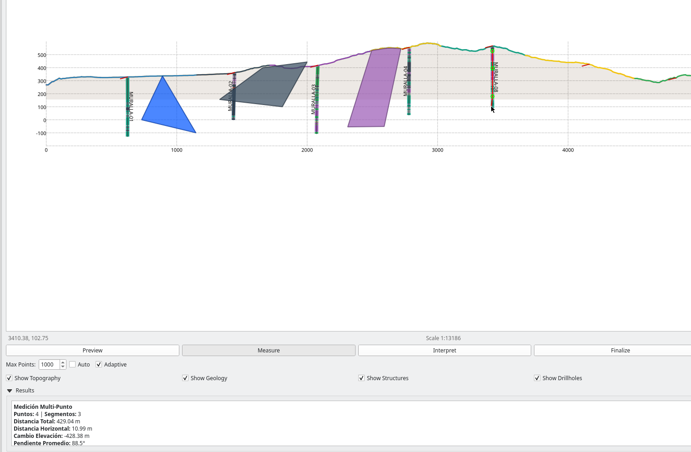
Figura 7: medición de la distancia a lo largo de una traza de sondeo.Herramienta de interpretación
Draw: Clic izquierdo para añadir vértices de una nueva unidad geológica.
Edit: Los vértices se ajustan a las líneas existentes para garantizar la consistencia topológica.
Finish: Doble clic para cerrar el polígono y asignar atributos (Litología, Formación).
6. Closing & Saving
Es importante entender la diferencia entre Guardar y Aceptar: